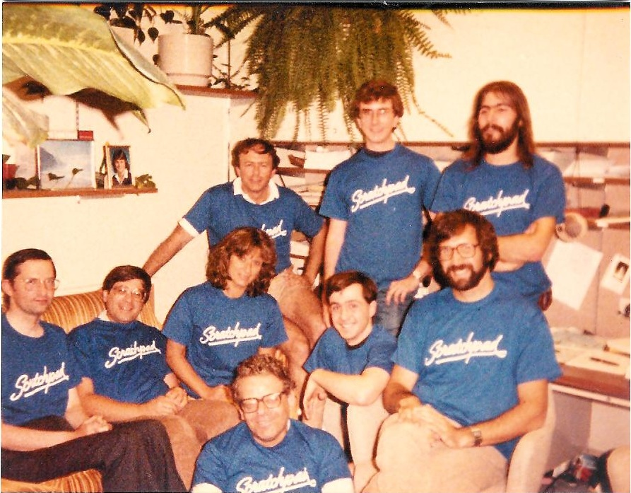

The Scientific Computation System
The Scientific Computation System
Axiom Development
This is an interesting photo from about 1984 showing some of the original
Axiom developers:

The top row is Dick Jenks, Scott Morrison, and Julian Padget
The middle row is James Davenport, Victor Miller, Patricia Gianni,
an unidentified person, and Barry Trager.
The bottom row is Michael Rothstein.
Axiom development is now hosted on Sourceforge, Savannah, and Github
using the git source code control.
The CVS, SVN, and Arch archives are no longer maintained.
You can obtain the latest sources with one of:
git clone axiom@git.sv.nongnu.org:/srv/git/axiom.git
git clone ssh://daly@axiom.git.sourceforge.net/gitroot/axiom/axiom